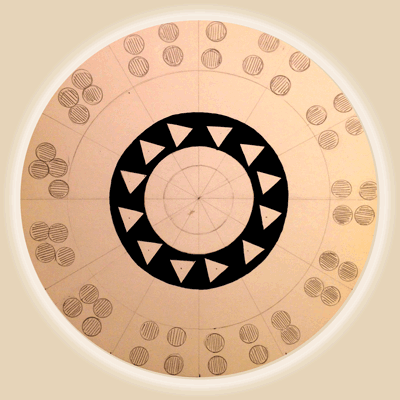

Entrelazamiento en cadenas dimerizadas
A. Boette, R. Rossignoli, N. Canosa, J.M. Matera
IFLP/Depto. de Física-CONICET, Universidad Nacional de La Plata

#
Motivaciones
Slide Title

\(H=\sum_{i\; {\rm par}}\! B(s^z_{i-1}+s^z_{i})-\sum_{\mu}J_\mu(s_{i-1}^\mu s_{i}^\mu+\alpha s_{i}^\mu s_{i+1}^\mu)\)
con \(\mu=x,y\), \(\chi=J_y/J_x\leq 1\), \(|\alpha|\leq 1\).
Aproximación de campo medio de pares (GMF)
- basada en \(|\Psi\rangle=\otimes_{i\;{\rm par}} |\psi_i\rangle\).
- Hamiltoniano autoconsistente \(h=\sum_i h_i\) con
\(h_i=B(s^z_{i-1}+s^z_{i})-\sum_{\mu}J_\mu[s_{i-1}^\mu s_{i}^\mu+\alpha(s_{i}^\mu \langle s_{i+1}^\mu\rangle+s_{i-1}^\mu\langle s_{i-2}^\mu\rangle)]\)
Acoplamiento interno tratado en forma exacta.
Simetría de Paridad: \([H,P_z]=0\), \(P_z=e^{i\pi S_z}\)
\(\bullet\) Fases dimerizadas: \(\langle s_i^\mu\rangle=0\), \([h,P_z]=0\)
\(\bullet\) Fases con simetría rota: \(\langle s_i^\mu\rangle\neq 0\), \([h,P_z]\neq 0\)
Foo
 https://www.youtube.com/watch?v=rPC6SZeYT_s
https://www.youtube.com/watch?v=rPC6SZeYT_s